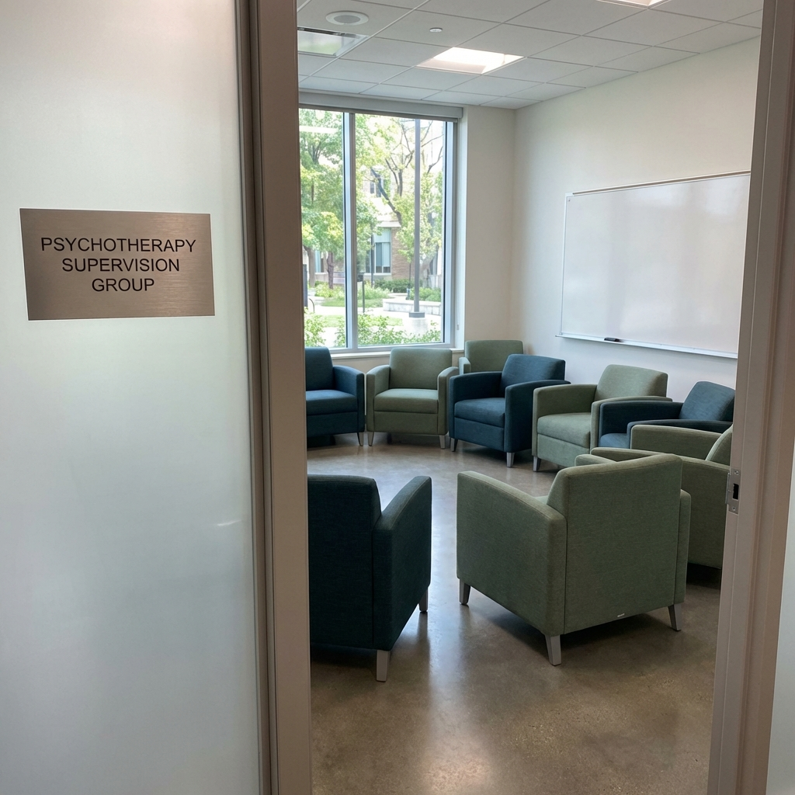

Learning Psychotherapy under supervision
A dedicated space for mental healthcare professionals to deepen their understanding, refine their skills, and engage in meaningful supervision.

Clinical Supervision & Training Videos
Practical guidance, supervision discussions, and clinical technique discussions by Dr. Naveen Grover (@DrNaveenGrover).
Omnipotence Rule
Managing high client arousal, handling expectations of being the troubleshooter, and practicing de-escalation skills in professional interactions.
Threatening Client
Precautions for safety and how not to get riled up by client accusations. Avoiding defensive mode, maintaining exit routes, and continuing if safety permits.
How to Learn Skills
A detailed guide for beginner trainees on acquiring microskills, structuring practice responses, handling supervision feedback, and avoiding premature perfectionism.
Cognitive Restructuring Technique
What to say to avoid arguments and respect the client's observations. Clarifying what cognitive restructuring is in clinical practice versus simple disputation.
Initial follow-up: For Trainees
A glimpse into OPD follow-up training for beginner trainees. Medication compliance assessment, distinguishing family tree from personal tree, and structured review.
Therapist in Crisis
When the client calmly says they want to die, the therapist faces confusion and crisis. Guidance on how to buy time and navigate difficult therapeutic moments.
Handling First Session
Key principles of structuring intake and initial clinical interviews, evaluating psychological sophistication, and setting simple clinical expectations.
Basic Skills
Why clinicians must never lose sight of core basics in history-taking and interviewing, comparing deliberate clinical training to athletic mastery.
Book se Pare
Theory to practice: how textbook dogma can blind clinicians from essential human skills, flexibility, and empathy in clinical sessions.
Clinical skills - Intake assessment
The funnel approach in clinical intake: moving from general inquiries to idiosyncratic client perceptions, and forming dynamic clinical hypotheses.
What not to do in psychotherapy
Essential pitfalls to avoid: clinic setting considerations, avoiding premature suggestions, managing self-disclosure pace, and the line between judging and being judgmental.
Transference and Dependence
Dispelling misconceptions around transference and client dependence. Understanding when to raise red flags and how therapist self-efficacy supports the relationship.
Therapist in Crisis - Extended Supervision
In-depth supervisory dialogue exploring acute therapeutic dilemmas, manageability of practitioner distress, and boundary maintenance during clinical challenges.
Working with Therapeutic Resistance
Understanding resistant dynamics in therapy, exploring the function of defenses, and resolving impasses collaboratively in clinical supervision.
Core Competencies in Clinical Supervision
Establishing a structured supervisory alliance, developmental mentoring benchmarks, and constructive feedback loops for mental health trainees.
Ethics, Boundaries & Dual Relationships
Navigating complex ethical situations in clinical psychotherapy practice, maintaining professional boundaries, and resolving ethical dilemmas.
Case Formulation in CBT
Building longitudinal formulations: connecting core beliefs, intermediate rules, and coping strategies directly to clinical interventions.
Socratic Questioning & Guided Discovery
Techniques for fostering introspection through open inquiry, helping clients examine alternative perspectives without feeling interrogated.
Designing Behavioral Experiments
Translating cognitive insights into behavioral practice, testing catastrophic predictions, and evaluating evidence collaboratively in therapy.
Alliance Rupture & Therapeutic Repair
Recognizing subtle ruptures in the working alliance, utilizing metacommunication, and repairing relational misattunements during sessions.
Clinical Risk Assessment & Safety Planning
Best practices for structured suicide and self-harm risk evaluations, safety planning collaboratively, and adhering to documentation standards.
Documentation & Clinical Notes
Writing concise, defensible progress notes, managing confidential records, and balancing legal compliance with therapeutic utility.
Upholding the Principles of Practice
We are committed to the sacrosanct principles of psychotherapy practice, research, and training. Our goal is to foster an environment where self-reflection and professional growth lead to the ultimate benefit of the client.
- Harnessing self-regulation in practice
- Cultivating automaticity in introspection
- Embracing supervision as indispensable
Supervision Activities
Tailored guidance for every stage of your professional journey.
Individual Supervision
One-on-one mentorship focused on your specific clinical cases and personal growth as a therapist.
Group Supervision
Collaborative learning in a supportive peer environment, fostering diverse perspectives.
Online Consultations
Accessible remote supervision sessions designed to fit your busy professional schedule.